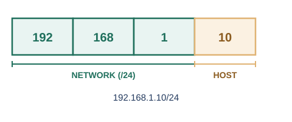
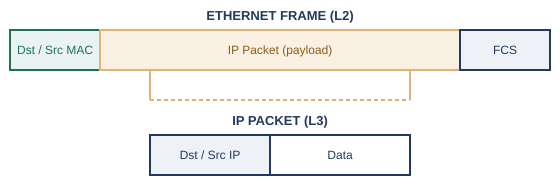

序章の終盤で、組織を越えてネットワーク同士をつなぐために、IPアドレスとルータが登場する様子を見てきました。IPアドレス（IPv4アドレス）は32ビットの数値で、8ビットずつ4つに区切り、それぞれを10進数にして.（ドット）でつないだ形（例: 192.168.1.10）で表記します。
MACアドレスとの違いを整理しておきましょう。MACアドレスは、機器が製造された時点で焼き付けられる固定の識別子で、同じ配線・同じセグメントの中でしか意味を持ちません。これに対してIPアドレスは、機器がどのネットワークに所属しているかに応じて割り当てられる、住所のような階層的な番号です。引っ越しをすれば住所（IPアドレス）は変わりますが、個人を示す名前（MACアドレス相当のもの）は変わらない、というイメージに近いかもしれません。
社内LANでよく見かける192.168.x.xや10.x.x.xといったアドレスは、この予約されたプライベートIPアドレスの範囲を使っている、というわけです。
IPアドレスの32ビットは、そのまま全体が1台の機器を指すわけではありません。前半の一部が「どのネットワークに属しているか」を表すネットワーク部、残りが「そのネットワークの中の何番目の機器か」を表すホスト部として使われます。この境界線がどこにあるかを示すのが、サブネットマスクです。

同じネットワーク部を持つ機器同士は、間にルータを挟まずに直接やり取りできる「同じネットワークの中」にいる、とみなされます。1つの大きなネットワークを、部署やフロアといった単位でいくつかの小さなネットワークに分割したいとき、ホスト部の一部をさらにネットワーク部として使うことで、より細かいネットワークに区切ることができます。この分割作業を、サブネッティングと呼びます。細かく分割すればするほど、1つのネットワークに含まれる機器の台数は減っていきます。これは、第3章で見たブロードキャストドメインの範囲を、意図的に小さく保つ効果にもつながります（図中の「/24」という区切りの書き方は、次の4.3節で詳しく説明します）。
かつてのIPアドレス体系では、ネットワーク部の長さがあらかじめクラスA・B・Cという3種類の固定長に決められており、組織の規模に対して割り当てが大きすぎたり小さすぎたりする無駄が生じやすい仕組みでした。また、割り当てが細切れになるほど、インターネット全体のルーティングテーブルが肥大化していく、という問題も抱えていました。
この問題を解決するために導入されたのが、CIDR（Classless Inter-Domain Routing）という表記法です。ネットワーク部の長さをクラスという固定の単位で区切るのをやめ、任意のビット数を自由に指定できるようにし、そのビット数を「/」に続けて示す表記が採用されました※2。たとえば、サブネットマスク255.255.255.0は、先頭から数えて24ビットがネットワーク部であることを意味するため、/24と表記します。この表記のおかげで、組織の規模に合わせて必要な分だけのアドレス空間を、無駄なく割り当てられるようになりました。
ある機器が通信をしようとするとき、あて先のIPアドレスが自分と同じネットワーク部を持っていれば、直接やり取りできます。しかし、あて先が別のネットワークに属している場合、その機器は「ここから先、どうやって届ければよいか」を自分では判断できません。そこで、あらかじめ設定しておいた、自分のネットワークの出入り口となる機器（多くの場合ルータ）に、その通信を丸ごと預けます。この出入り口の役割を果たす機器のIPアドレスを、デフォルトゲートウェイと呼びます。
序章で見た「組織を越えてつながりたい」という欲求と、それに応えるルータの役割は、まさにこのデフォルトゲートウェイという形で、日々の通信の中に現れています。
第3章で見たイーサネットフレームと、この章で見たIPパケットは、別々の層のものですが、実際にはIPパケットがまるごとイーサネットフレームの中身（ペイロード）として運ばれる、という入れ子の関係になっています。

ここで疑問が浮かびます。送信したい相手のIPアドレスはわかっていても、フレームの宛先には本来MACアドレスを書く必要があります。IPアドレスから、対応するMACアドレスをどうやって知ればよいのでしょうか。
この「IPアドレスから、対応するMACアドレスを問い合わせる」役割を果たすのが、ARP（Address Resolution Protocol）という仕組みです。1982年にRFC 826として標準化されており※3、同じネットワークの中に向けて「このIPアドレスを持っているのは誰ですか」と問いかけ、該当する機器が自分のMACアドレスを返答する、という手順になっています。ARPの具体的な手順は第7章で改めて扱います。
ここで押さえておきたいのは、通信の最初から最後まで、あて先のIPアドレスはずっと変わらない一方、フレームの宛先MACアドレスは、ルータを1つ越えるたびに「次にどの機器へ渡すか」に応じて書き換えられる、という点です。IPアドレスが旅全体の最終目的地を、MACアドレスがそのときどきの「次の1歩」を指し示している、と考えると、両者の役割の違いがつかみやすくなります。